PROJETS PERSOS
Motion Tracking sur une Vidéo de Skate
Incrustation d'éléments graphiques sur une séquence en mouvement
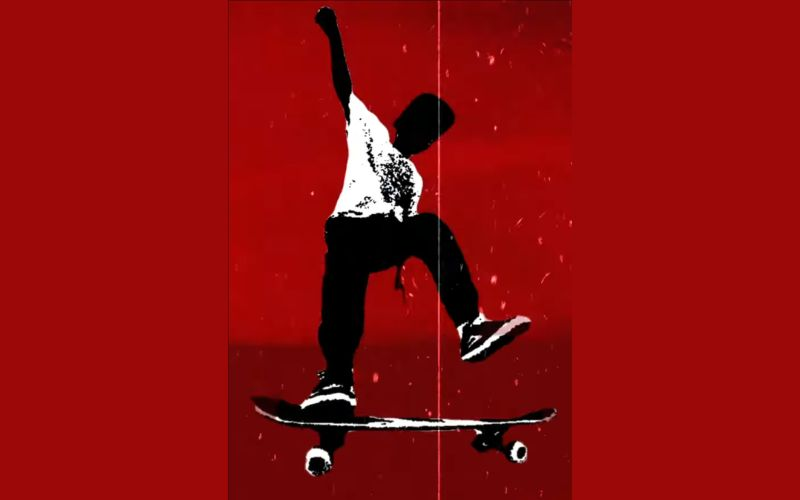
Création et impression d'une carte Pokémon
Illustration originale et réalisation d'un prototype imprimé
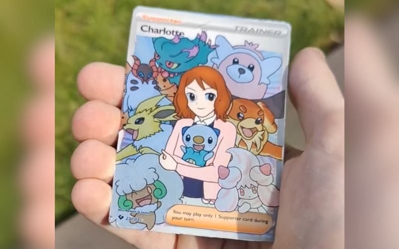
Affiche de Style Brutaliste
Composition graphique radicale inspirée de l'univers d'Initial D
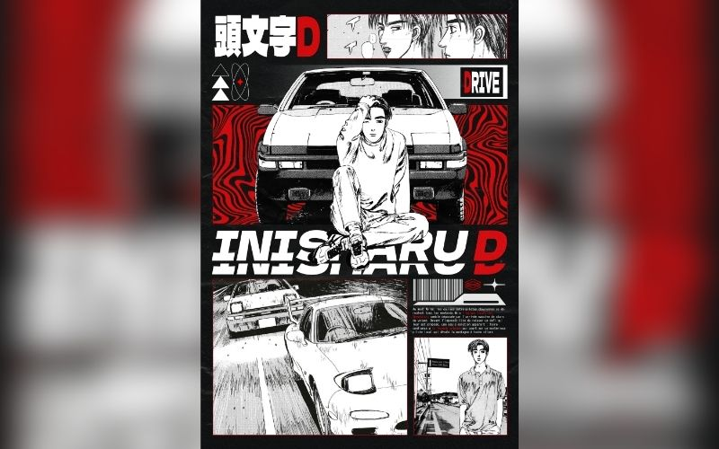
Animation en Rotoscopie
Décomposition du mouvement et création d'effets visuels dynamiques
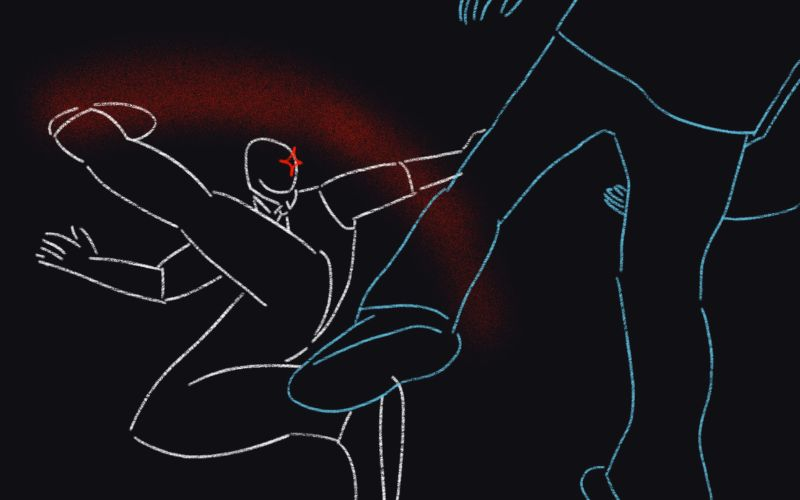
Affiche Expérimentale Chaotique
Étude de la déconstruction inspirée par l'artiste Thomas Vanoost
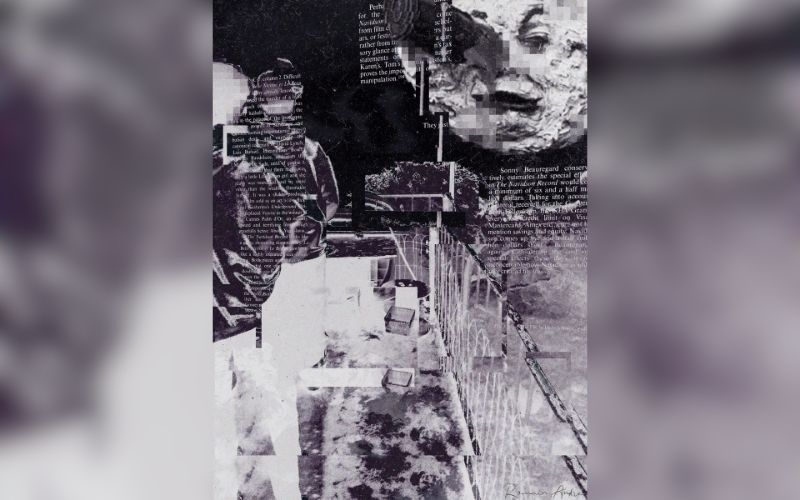
Compositing style Analog CRT
Simulation de rendu d'écran cathodique et expérimentation rétro futuriste
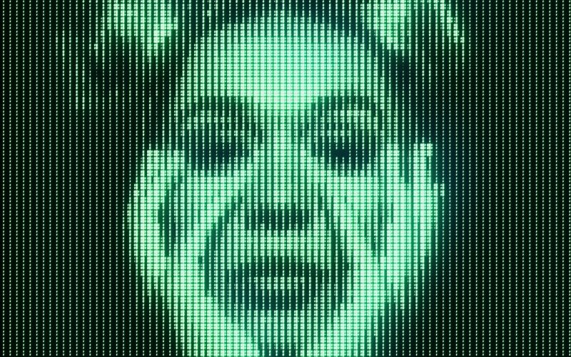
Branding Twitch stylisé
Identité visuelle complète et interface utilisateur style Windows 95
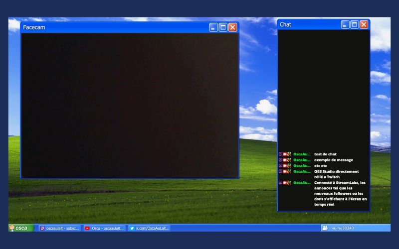
Design & Intégration (Modding)
Création de textures personnalisés pour des jeux vidéos compétitifs
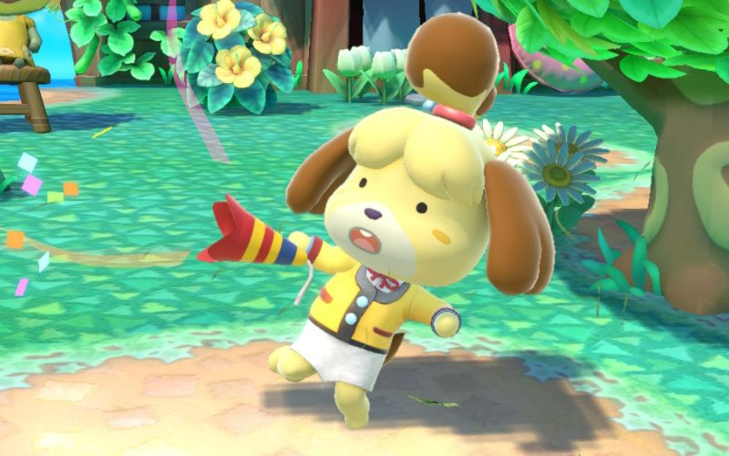
Tyopgraphie de type Glitch Art
Déconstruction visuelle et portrait numérique expérimental
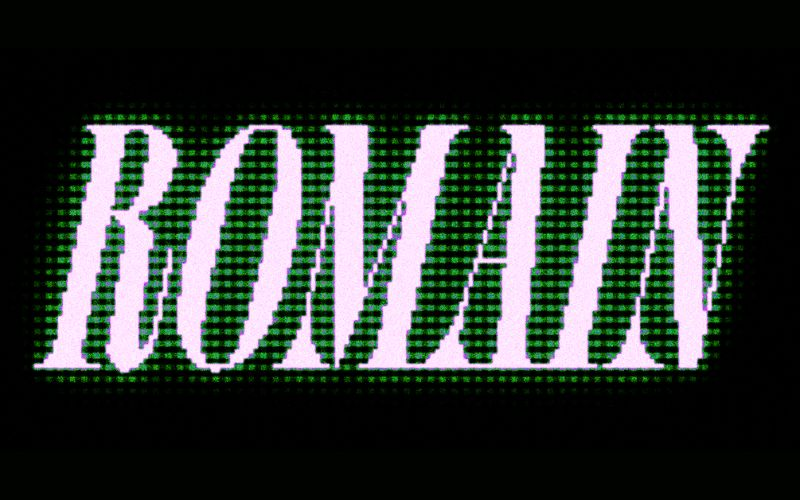
Illustration Photocopie Pop Art
Hybridation entre esthétique onirique et rendu fanzine vintage
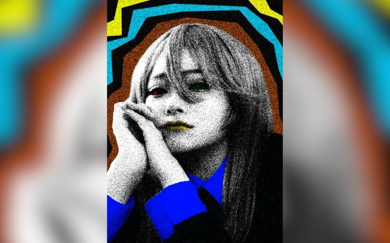
Concept Art de pokémons
Recherche graphique et illustration de créatures originales
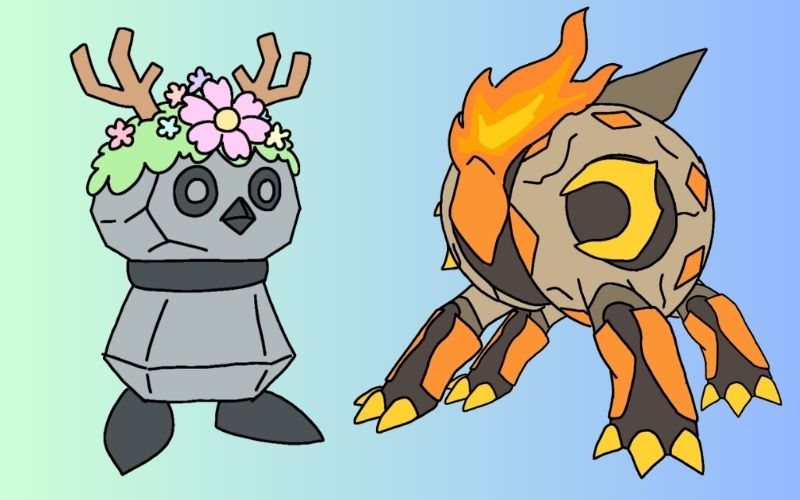
Création de Pixel Art sous contraintes
Création de sprites originaux respectant des limitations techniques strictes
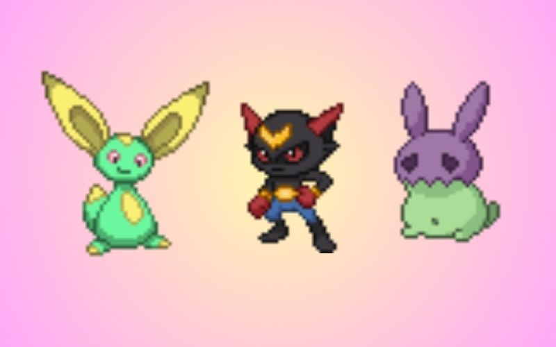
Typographie au format 8 Bit
Conception graphique minimaliste et synthèse visuelle d'objets
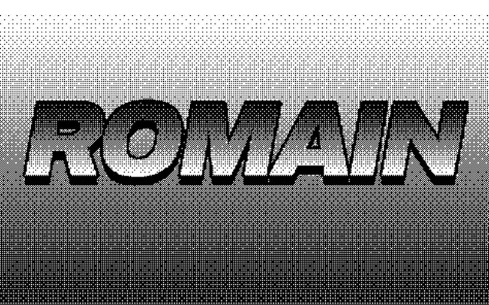